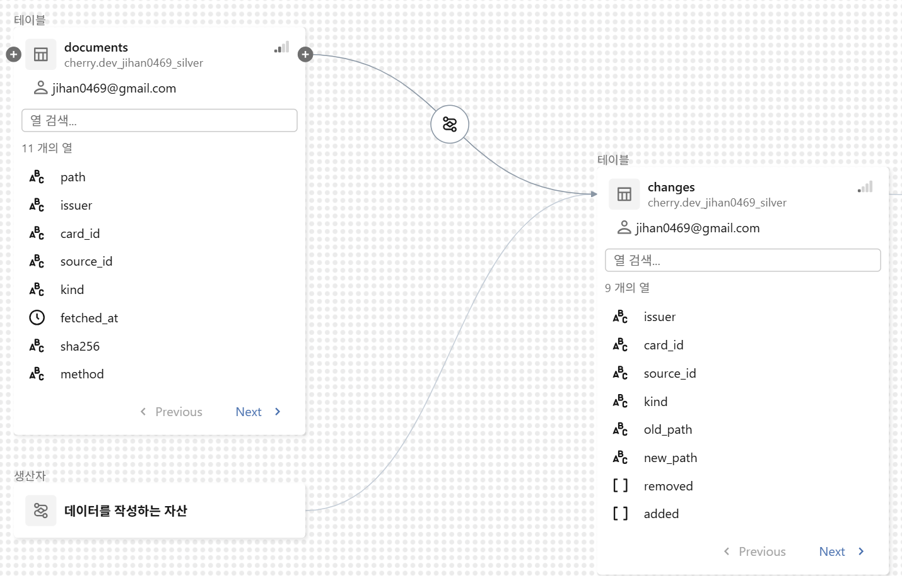

보유 카드의 실적과 혜택을 계산해 결제할 카드를 추천하는 개인 앱입니다. LLM이 추출한 약관을 승인 이후 계산에 반영하고, AI의 개발 절차와 검증 역할을 직접 설계했습니다. 대상 카드 원문 확보율을 95.0%에서 99.3%로 높였습니다. 앱은 비공개 테스트 중이며 정식 출시를 준비하고 있습니다.
기간과 인원
2026.09 ~ 진행 중 | 개인 프로젝트
본인 역할
서비스 기획, AI 개발 절차와 에이전트 역할 및 권한 설계, 약관 추출과 검수 흐름, 데이터 구조, 배포 및 검증
기여도
100% | 기획부터 개발 결정과 검증, 출시 준비까지 전 과정 책임
사용 기술
Python, Databricks, PySpark, Delta Lake, LLM, Flutter, Dart, SQLite
카드마다 실적 조건과 할인 한도가 달라 약관 해석이 잘못되면 추천 금액도 달라집니다. LLM의 추출 결과를 초안으로 두고, 원문과 대조해 승인한 규칙만 계산에 사용하도록 정했습니다.
설계와 구현
Databricks에서 원문, 추출 초안, 검수 기록과 승인 결과를 분리했습니다. 변경된 원문만 다시 추출하고 승인 결과를 중복 없이 반영하도록 구성했습니다. 문장 해석은 LLM에, 확정된 규칙에 따른 금액 계산은 별도 엔진에 두어 각각 확인했습니다.
수집 개선
원문 확보 비율을 확인하던 중 누락을 발견해 실행 기록을 대조하도록 요청했습니다. PDF 변환 오류가 수집 전체를 종료시키는 문제여서, AI 도구로 변환 작업을 별도 프로세스에 분리해 재수집하고 확보율을 다시 확인했습니다.
원문 수집변경된 원문 구분
LLM 추출 초안확정 데이터와 분리
원문 대조와 승인사람의 확인 단계
승인 결과 반영중복 없이 MERGE
원문 확보율 95.0% → 99.3%당시 판매 중 개인 카드 1,846장 기준입니다. 승인 결과를 반영하는 파이프라인은 운영 환경에 배포했습니다.
추가 근거: Databricks 데이터 계보 화면

직접 설계한 원문 변경 관리 흐름의 일부입니다. 운영 환경 구축 당시 화면입니다.
AI의 구현과 검증을 분리한 개발 절차
문제와 판단
카드 혜택은 조건을 잘못 해석하면 계산 금액이 달라집니다. AI가 구현한 코드를 같은 관점으로 검증하면 오류를 놓칠 수 있다고 보고, 구현과 기대값 작성 및 검토를 분리했습니다.
절차 설계
AI SDLC는 요구사항부터 설계, 구현, 검증과 기록까지 AI가 따를 개발 절차입니다. 반복 작업을 스킬로 구성하고, 계산 규칙을 바꿀 때는 원문 근거와 규칙 문서, 손계산 기대값을 먼저 준비한 뒤 실패 확인과 구현, 테스트 및 위험 검토로 이어지도록 정했습니다.
역할과 권한
원문 조사, 원문 대조, 위험 검토 에이전트의 역할과 권한을 구분했습니다. 조사 에이전트는 카탈로그 사본을 작성하고, 대조 에이전트는 원문과 비교한 불일치만 보고하도록 했습니다. 위험 검토는 금액 계산과 개인정보, 데이터 변경을 살피되 파일을 직접 수정하지 않도록 정했습니다. 민감한 파일 접근과 강제 푸시도 제한했습니다.
자동 검사
작업 단계에 검사를 연결하는 훅을 구성했습니다. 카탈로그나 Python 파일 수정 뒤 검사를 실행하고, 계산 엔진과 저장소 코드가 바뀌면 종료 시 관련 테스트를 실행해 실패 내용을 AI에 반환하도록 했습니다. 절차와 역할, 권한 및 자동 검사를 연결한 하네스 엔지니어링으로 검증을 작업 흐름에 포함했습니다.
적용과 결과
초기 Python 계산 엔진은 코드를 보지 않은 별도 에이전트가 기대값을 작성하도록 했습니다. 업무 규칙과 검증 기준을 정하고 실제 명세서 5달치와 대조한 결과, 187건 중 170건의 계산 결과가 일치했습니다. 나머지 17건은 미표시 할인, 카드사의 업종 판정, 이전 이용 정보 부족 등으로 구분했습니다. 확인 정보가 부족한 거래를 정확하다고 간주하지 않았고, 대조 가능한 범위에서는 엔진 오류가 확인되지 않았습니다.
근거와 기대값규칙 문서와 손계산 표
구현과 자동 검사스킬 절차와 훅 실행
독립된 위험 검토역할과 수정 권한 분리
실제 결과 대조명세서 확인과 원인 기록
02 한눈
뉴스 수집부터 사용자가 보는 이슈까지 이어진 데이터 처리
13개 언론사의 뉴스를 사건별로 묶고 관점을 비교하는 5인 서비스입니다. 팀장 겸 단독 데이터 엔지니어로 수집부터 분석 입력과 서비스 전달을 연결하고, 분석 입력 추출 시간을 56.9% 줄이는 한편 화면의 중복 이슈를 교정했습니다.
약 1,115만 건의 기사 이관 결과를 전후 건수로 대조했습니다. 전체 Airflow 작업 흐름 8개 중 6개를 구현했고, 수집과 적재 작업 2개는 15분 주기로 운영했습니다.
폴더를 하나씩 훑던 분석 입력 추출의 개선
문제와 원인
분석팀에 전달할 데이터를 만들 때 폴더 2,814개의 수정 시각을 확인하고 있었습니다. 15분마다 실행하는 작업에서 파일을 찾는 과정이 반복됐습니다.
선택과 실행
파일 목록을 테이블 정보로 관리하는 Iceberg를 선택했습니다. 운영 중인 경로를 바로 교체하면 문제가 생겼을 때 되돌리기 어려워, 기존 저장과 병행해 새 테이블을 구성했습니다. 데이터 일치를 2차례 대조한 뒤 읽기 경로를 전환했습니다.
분석팀 입력 추출 시간
전환 전
전환 후
변화
46.6초
20.1초
56.9% 단축
읽기 경로 전환 후의 입력 추출 작업을 측정했습니다. 프로젝트 종료 시 쓰기는 기존 저장과 병행했습니다.
작업은 정상인데 같은 사건이 여러 개로 보이던 문제
문제와 원인
실행 성공과 처리 건수만으로는 사용자가 보는 중복을 알 수 없었습니다. 분석 결과와 화면 전달 경로를 나눠 조사하고 13일치 기록을 확인했습니다. 날짜가 바뀌면 같은 사건에 새 번호가 생기고, 첫 실행의 잘못된 번호가 이후에도 유지되고 있었습니다.
선택과 실행
측정과 재현 방법은 분석 담당자에게 전달하고, 원래 분석 결과를 보존하면서 서비스에 보내기 직전에 번호를 교정했습니다. 최근 3일의 발행 기록과 비교해 기사 2건 이상이 겹치고 그 비중이 과반이면 기존 번호를 연결했습니다. 다른 이슈가 이미 사용하는 번호는 가져오지 않도록 했습니다.
결과
첫 실행의 374개 이슈 중 81개를 기존 사건의 번호로 연결했습니다. 이후 번호 연결과 관점 분류 결과를 살피는 품질 지표 5개와 Grafana 화면을 추가했습니다.
기록에서 확인한 번호 교정 사례
새로 부여된 번호
연결한 기존 사건 번호
31214
29388
분석 결과는 보존하고 서비스 발행 단계에서 연결했습니다. 측정 결과와 재현 방법은 분석 담당자에게 전달했습니다.
03 빵긋
첫 팀 프로젝트에서 만든 협업 기준
웃음소리를 감지해 추억 영상을 저장하는 AI 홈캠 서비스입니다. PM으로 녹화 조건과 개발 우선순위를 조율하고 기기와 서버, 앱의 작업을 연결해 4주 안에 개발과 발표를 마쳤으며, 팀의 SSAFY 공통 프로젝트 우수상 수상에 기여했습니다.
몸짓도 녹화 조건으로 검토했지만 AI 담당은 2명뿐이었고, 남은 기간에 핵심인 웃음소리 감지의 구현도 확실하지 않았습니다. 기획의 출발점인 웃음소리 감지는 중요도가 높았고 먼저 해결할 과제였습니다. 인물 탐지와 자동 추적은 유지하고, 녹화 시작 조건을 웃음소리 감지로 한정했습니다.
협업 방법
SSAFY 첫 팀 프로젝트여서 각자의 작업을 연결하는 방법도 익숙하지 않았습니다. 핵심 동작을 7단계로 나누고 기기, 서버, 앱의 역할에 요구사항과 API 번호를 연결했습니다. 변경 사항은 PM에게 공유해 공통 문서에 반영하도록 조율하고, 스크럼 17회와 Jira로 진행 상황을 공유했습니다.
본인 구현
앱의 자막 처리와 편집 흐름, 4컷 만화 생성 API 연결 및 결과 저장 화면을 개선했습니다. ERD는 초안을 만들었고 최종 테이블 확장은 백엔드 담당자가 진행했습니다.
직접 정리한 서비스 기획서의 감지부터 재생까지 역할 연결
단계
기기와 서버, 앱의 역할
연결한 API
감지와 업로드
기기가 웃음을 감지해 클립을 만들고 서버가 저장
API-25, 26
목록과 재생
서버가 영상 목록과 재생 경로를 제공하고 앱에서 시청
API-27, 31
편집과 저장
원본을 내려받아 폰에서 편집하고 갤러리에 저장
API-32
04 namu-reco
서버 없는 선택, 2주 만의 게시
읽은 나무위키 문서를 바탕으로 다음 문서를 추천하는 개인 크롬 확장 프로그램입니다. 추천 방식과 데이터 처리, 배포 구조를 직접 정해 8.8GB 덤프를 처리하고 2주 만에 첫 버전을 스토어에 게시했습니다.
기간과 인원
2026.08 ~ 2026.09 | 개인 프로젝트, 첫 게시 이후 개선 포함
본인 역할
기획, 데이터 출처와 추천 방식 선택, 처리 흐름 설계, 검증과 스토어 배포
기여도
100% | 기획과 개발 방향, 검증 및 배포 결정 전 과정 책임
사용 기술
Python, PySpark, 문서 임베딩, GPU 이웃 계산, IndexedDB, Chrome Extension, GitHub Pages